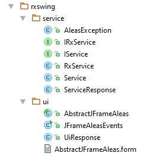
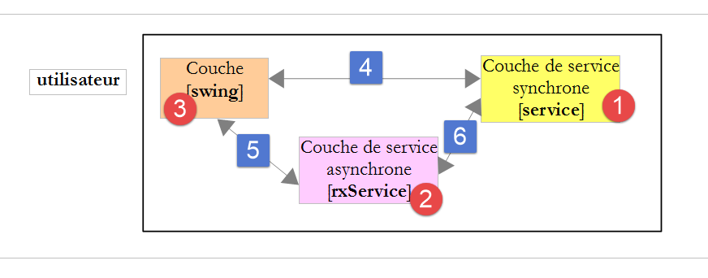
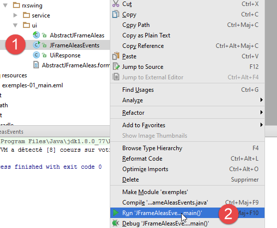
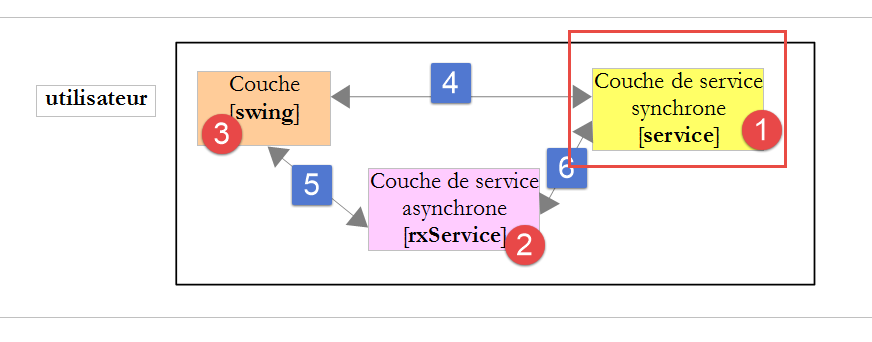
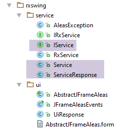
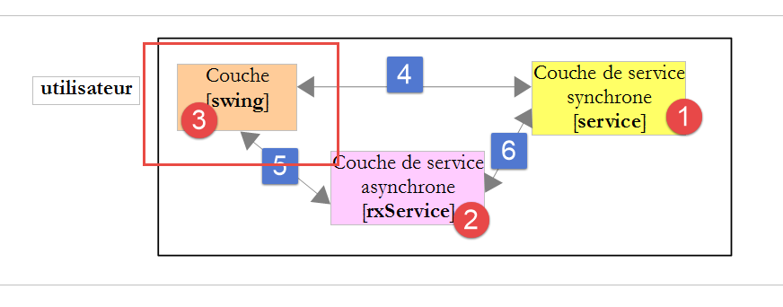
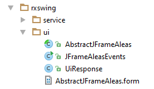
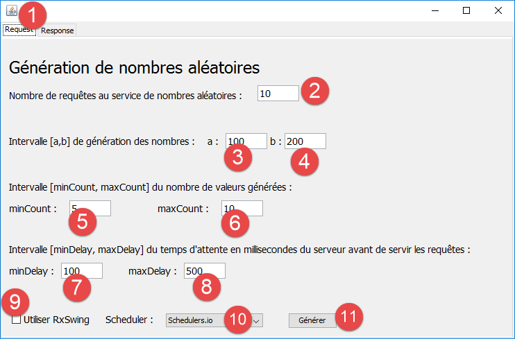

8. RxJava in der Swing-Umgebung
8.1. Einleitung
Hier werden wir die in Abschnitt 2 vorgestellte Swing-Anwendung noch einmal betrachten.
 |
Um mit RxJava in einer Swing-Umgebung zu arbeiten, verwenden wir die RxSwing-Bibliothek, die RxJava um Klassen und Schnittstellen erweitert, die in einer Swing-Umgebung nützlich sind. Dazu sieht die Gradle-Datei für das Swing-Beispiel wie folgt aus:
 |
buildscript {
repositories {
mavenCentral()
}
}
apply plugin: 'java'
jar {
baseName = 'exemples-01'
version = '0.0.1-SNAPSHOT'
}
repositories {
mavenCentral()
}
dependencies {
compile('io.reactivex:rxswing:0.25.0')
compile('io.reactivex:rxjava:1.1.3')
compile('com.fasterxml.jackson.core:jackson-databind:2.7.3')
}
task wrapper(type: Wrapper) {
gradleVersion = '2.9'
}
- Zeile 15: die Abhängigkeit von RxSwing;
Wir werden nur ein einziges RxSwing-spezifisches Objekt verwenden: den Scheduler [SwingScheduler.getInstance()], der Observables im Thread der Swing-Ereignisschleife ausführt bzw. beobachtet. Wir werden ihn ausschließlich dazu nutzen, Observables zu beobachten, die in anderen Threads als dem der Ereignisschleife laufen. Sehen wir uns die Architektur der Beispielanwendung noch einmal an:

- Die asynchrone Service-Schicht stellt Methoden bereit, die Observables zurückgeben. Wir führen diese Observables in anderen Threads als dem Event-Loop-Thread aus. Auf diese Weise bleibt die GUI reaktionsfähig. Sie kann auf Benutzereingaben reagieren. Das offensichtlichste Beispiel ist die Möglichkeit für den Benutzer, auf eine [Abbrechen]-Schaltfläche zu klicken, um einen asynchronen Vorgang zu unterbrechen, der zu lange dauert. Damit dies funktioniert, muss die GUI eingefroren werden;
- die Swing-Schicht muss die von asynchronen Operationen zurückgegebenen Ergebnisse verarbeiten und sie zur Aktualisierung der GUI verwenden. Dies kann jedoch nur im Thread der Ereignisschleife erfolgen. Um dies zu erreichen, werden diese Ergebnisse im Scheduler [SwingScheduler.getInstance()] beobachtet;
Daher erfolgt die Interaktion mit der asynchronen Ebene [rxService] im Code zur Ereignisbehandlung der GUI wie folgt:
Observable obs=rxService.doSomething(...).subscribeOn(Schedulers.computation()).observeOn(SwingScheduler.getInstance()) ;
wobei der Scheduler [Schedulers.computation()] je nach Anwendungsfall durch einen anderen Scheduler ersetzt werden kann.
Der Leser ist eingeladen, Absatz 2 noch einmal zu lesen. Er verfügt nun über das nötige Wissen, um ihn vollständig zu verstehen.
8.2. Die Codestruktur
Der Code implementiert die folgende Architektur:
Das IntelliJ IDEA-Projekt, das diese Architektur implementiert, sieht wie folgt aus:
- Das Paket [rxswing.service] implementiert die synchronen (IService, Service) und asynchronen (IRxService, RxService) Service-Schichten;
- Das Paket [rxswing.ui] implementiert die Swing-Schnittstelle;
8.3. Ausführen des Projekts
Um das Projekt in IntelliJ IDEA auszuführen, gehen Sie wie folgt vor:
 |
8.4. Der synchrone Dienst

 |
Die synchrone Service-Schicht stellt die folgende [IService]-Schnittstelle bereit:
package dvp.rxswing.service;
public interface IService {
// random numbers in the [a,b] interval
// n numbers are generated with n itself a random number in the interval [minCount, maxCount]
// numbers are generated after a delay of milliseconds,
// where [delay] is itself a random number in the interval [minDelay, maxDelay]
public ServiceResponse getAleas(int a, int b, int minCount, int maxCount, int minDelay, int maxDelay);
}
Der Typ [ServiceResponse] der Dienstantwort lautet wie folgt:
package dvp.rxswing.service;
import java.util.List;
public class ServiceResponse {
// service waiting time
private int delay;
// random numbers
private List<Integer> aleas;
// execution thread
private String executedOn;
// manufacturers
public ServiceResponse() {
// execution thread
executedOn = Thread.currentThread().getName();
}
public ServiceResponse(int delay, List<Integer> aleas) {
// local builder
this();
// other initializations
this.delay = delay;
this.aleas = aleas;
}
// getters and setters
...
}
Die Schnittstelle [IService] wird von der folgenden Klasse [Service] implementiert:
package dvp.rxswing.service;
import java.util.*;
public class Service implements IService {
@Override
public ServiceResponse getAleas(int a, int b, int minCount, int maxCount, int minDelay, int maxDelay) {
// random numbers in the [a,b] interval
// n numbers are generated with n itself a random number in the interval [minCount, maxCount]
// numbers are generated after a delay of milliseconds,
// where [delay] is itself a random number in the interval [minDelay, maxDelay]
// some checks
List<String> messages = new ArrayList<>();
int erreur = 0;
if (a < 0) {
messages.add("Le nombre a de l'intervalle [a,b] de génération doit être supérieur à 0");
erreur |= 2;
}
if (a >= b) {
messages.add("Dans l'intervalle [a,b] de génération, on doit avoir a< b");
erreur |= 4;
}
if (minCount < 0) {
messages.add("Le nombre min de l'intervalle [min,count] du nombre de valeurs générées doit être supérieur à 0");
erreur |= 16;
}
if (minCount > maxCount) {
messages.add("Dans l'intervalle [min,count] du nombre de valeurs générées, on doit avoir min<= max");
erreur |= 32;
}
if (minDelay < 0) {
messages.add("Le nombre min de l'intervalle [min,count] du délai d'attente doit être supérieur à 0");
erreur |= 64;
}
if (minCount > maxCount) {
messages.add("Dans l'intervalle [min,count] du délai d'attente, on doit avoir min<= max");
erreur |= 128;
}
if (maxDelay > 5000) {
messages.add("L'attente en millisecondes avant la génération des nombres doit être dans l'intervalle [0,5000]");
erreur |= 256;
}
// mistakes?
if (!messages.isEmpty()) {
throw new AleasException(String.join(" [---] ", messages), erreur);
}
// random number generator
Random random = new Random();
// waiting?
int delay = minDelay + random.nextInt(maxDelay - minDelay + 1);
if (delay > 0) {
try {
Thread.sleep(delay);
} catch (InterruptedException e) {
throw new AleasException(String.format("[%s : %s]", e.getClass().getName(), e.getMessage()), 1024);
}
}
// result generation
int count = minCount + random.nextInt(maxCount - minCount + 1);
List<Integer> nombres = new ArrayList<>();
for (int i = 0; i < count; i++) {
nombres.add(a + random.nextInt(b - a + 1));
}
// return result
return new ServiceResponse(delay,nombres);
}
}
Die vom Dienst verwendete Ausnahmeklasse [AleasException] lautet wie folgt:
package dvp.rxswing.service;
public class AleasException extends RuntimeException {
private static final long serialVersionUID = 1L;
// error code
private int code;
// manufacturers
public AleasException() {
}
public AleasException(String detailMessage, int code) {
super(detailMessage);
this.code = code;
}
public AleasException(Throwable throwable, int code) {
super(throwable);
this.code = code;
}
public AleasException(String detailMessage, Throwable throwable, int code) {
super(detailMessage, throwable);
this.code = code;
}
// getters and setters
...
}
- Zeile 3: Sie erweitert die Klasse [RuntimeException]. Es handelt sich daher um eine unbehandelte Ausnahme;
- Zeile 7: Sie fügt ihrer übergeordneten Klasse einen Fehlercode hinzu (0 = kein Fehler);
8.5. Der asynchrone Dienst

 |
Die asynchrone Service-Schicht stellt die folgende [IRxService]-Schnittstelle bereit:
package dvp.rxswing.service;
import dvp.rxswing.ui.UiResponse;
import rx.Observable;
public interface IRxService {
// random numbers in the [a,b] interval
// n numbers are generated with n itself a random number in the interval [minCount, maxCount]
// numbers are generated after a delay of milliseconds,
// where [delay] is itself a random number in the interval [minDelay, maxDelay]
public Observable<UiResponse> getAleas(int a, int b, int minCount, int maxCount, int minDelay, int maxDelay, UiResponse uiResponse);
}
- Zeile 11: Die Methode [getAleas] des Dienstes gibt nun ein Observable zurück;
Die Methode [getAleas] gibt eine Antwort vom Typ [UiResponse] zurück, die für die [Ui]-Schicht bestimmt ist. Dieser Typ ist wie folgt:
package dvp.rxswing.ui;
import dvp.rxswing.service.ServiceResponse;
import java.text.SimpleDateFormat;
import java.util.Calendar;
public class UiResponse {
// customer id
private int idClient;
// service response
private ServiceResponse serviceResponse;
// observation thread name
private String observedOn;
// query time
private String requestAt;
// response time
private String responseAt;
// manufacturers
public UiResponse() {
// observation thread
observedOn = Thread.currentThread().getName();
// query time
requestAt = getTimeStamp();
}
// private methods
private String getTimeStamp() {
return new SimpleDateFormat("hh:mm:ss:SSS").format(Calendar.getInstance().getTime());
}
// getters and setters
...
}
- Die Zufallszahlen befinden sich im Feld in Zeile 13;
- die anderen Felder dienen dazu, die Ausführungs- und Beobachtungs-Threads des Observables des asynchronen Dienstes sowie die Zeitstempel der an den Dienst gesendeten Anfrage und der empfangenen Antwort anzugeben;
Die asynchrone Schnittstelle wird durch die folgende [RxService]-Klasse implementiert:
package dvp.rxswing.service;
import dvp.rxswing.ui.UiResponse;
import rx.Observable;
public class RxService implements IRxService {
// synchronous service
private IService service;
// manufacturer
public RxService(IService service) {
this.service = service;
}
@Override
public Observable<UiResponse> getAleas(int a, int b, int minCount, int maxCount, int minDelay, int maxDelay, UiResponse uiResponse) {
// we create an observable emitting the value rendered by the synchronous service
return Observable.create(subscriber -> {
try {
// synchronous call
uiResponse.setServiceResponse(service.getAleas(a, b, minCount, maxCount, minDelay, maxDelay));
// the result is passed on to the observer
subscriber.onNext(uiResponse);
} catch (Exception e) {
// we pass the error to the observer
subscriber.onError(e);
} finally {
// the observer is informed that the emissions are finished
subscriber.onCompleted();
}
});
}
}
- Zeilen 12–14: Die Klasse [RxService] des asynchronen Dienstes wird aus einer Instanz der synchronen Schnittstelle [IService] erstellt;
- Zeilen 20–33: Konstruktion des Observables, das Ergebnis der Methode [getAleas];
- Zeile 22: Die synchrone Methode [service.getAleas] wird aufgerufen. Ihr Ergebnis vom Typ [ServiceResponse] wird in das Objekt vom Typ [UiResponse] aufgenommen, das an die [swing]-Schicht übergeben werden soll. Dieses Objekt wurde ursprünglich in den Aufrufparametern der Methode übergeben (letzter Parameter, Zeile 17);
- Zeile 24: Die [UiResponse] wird an den Beobachter (die [swing]-Schicht) gesendet. Das [UiResponse]-Objekt enthält nicht nur die Informationen, die vom synchronen Dienst in Zeile 22 generiert wurden, sondern auch weitere Informationen, die von der Methode generiert wurden, die die Methode [getAleas] in Zeile 17 aufruft. Aus diesem Grund hat die aufrufende Methode das [UiResponse]-Objekt als Parameter an die Methode [getAleas] übergeben (letzter Parameter, Zeile 17);
- Zeile 30: Wir vergessen nicht, das Ende der Emissionen zu signalisieren. Hier haben wir ein Observable, das nur einen Wert emittiert: den vom synchronen Dienst zurückgegebenen;
- Zeile 27: Wir benachrichtigen den Beobachter über etwaige Fehler;
8.6. Die grafische Benutzeroberfläche

 |
- Die grafische Benutzeroberfläche wurde mit der [NetBeans]-IDE erstellt, die über einen guten grafischen Editor verfügt. Dieser Editor erzeugte die Datei [AbstractJFrameAleas.form], die nur von dieser IDE verwendet werden kann;
- Die Klasse [AbstractJFrameAleas] wurde ebenfalls vom grafischen Editor von NetBeans generiert. Sie wurde anschließend wie folgt umgestaltet: Die GUI-Ereignisse, die wir verarbeiten wollten, werden in der Klasse [AbstractJFrameAleas] über abstrakte Methoden verarbeitet, die in der untergeordneten Klasse [JFrameAleasEvents] implementiert sind. Letztendlich,
- Die abstrakte Klasse [AbstractJFrameAleas] ist für den Aufbau und die Darstellung der Benutzeroberfläche zuständig;
- die Unterklasse [JFrameAleasEvents] verarbeitet deren Ereignisse;
Die GUI-Komponenten der Registerkarte [Request] sind wie folgt:
 |
Nr. | Typ | Name | Rolle |
1 | JTabbedPane | jTabbedPane1 | Ein Container mit Registerkarten. Enthält zwei Registerkarten (JPanel): [jPanelRequest] für die Anfrage und [jPanelResponse] für die Antwort; |
2 | JTextField | jTextFieldNbValues | die Anzahl der Anfragen, die an den Zufallszahlendienst gestellt werden sollen. Wenn der asynchrone Dienst auf dem Scheduler [Schedulers.io] läuft, teilen sich diese Anfragen einen Prozessor; |
3 | JTextField | jTextFieldA | Endpunkt a des Intervalls [a,b] |
4 | JTextField | jTextFieldB | Endpunkt b des Intervalls [a,b] |
5 | JTextField | jTextFieldMinCount | minCount Endpunkt des Intervalls [minCount, maxCount] |
6 | JTextField | jTextFieldMaxCount | maxCount-Grenze des Intervalls [minCount, maxCount] |
7 | JTextField | jTextFieldMinDelay | minDelay-Grenze des Intervalls [minDelay, maxDelay] |
8 | JTextField | jTextFieldMaxDelay | maxDelay-Grenze des Intervalls [minDelay, maxDelay] |
9 | JCheckBox | jCheckBoxRxSwing | Wenn das Kontrollkästchen aktiviert ist, werden Anfragen an die asynchrone Schnittstelle gesendet. Andernfalls werden sie an die synchrone Schnittstelle gesendet |
10 | JComboBox | jComboBoxSchedulers | Bei asynchronen Anfragen werden diese mit dem hier ausgewählten Scheduler ausgeführt |
11 | JButton | jButtonGenerate | startet die Ausführung von Anfragen an den synchronen oder asynchronen Dienst |
Die GUI-Komponenten der Registerkarte [Response] sind wie folgt:
 |
Nr. | Typ | Name | Rolle |
1 | JLabel | jLabelDuration | die Gesamtlaufzeit der Anfragen in Millisekunden |
2 | JLabel | jLabelNbResponses | die Gesamtzahl der beobachteten Antworten (kann von der Anzahl der Anfragen abweichen, da jede Anfrage mehrere zu beobachtende Werte zurückgeben kann) |
3 | JList | jListNumbers | Anzeige der beobachteten (empfangenen) Werte |
4 | JButton | jButtonCancel | bricht aktuell ausgeführte Anfragen ab |
8.7. Instanziierung der grafischen Benutzeroberfläche
 |
Die Klasse [JFrameAleasEvents] verarbeitet GUI-Ereignisse, darunter Klicks auf die Schaltfläche [Generate]. Es handelt sich um eine ausführbare Klasse, die im folgenden Kontext ausgeführt wird:
public class JFrameAleasEvents extends AbstractJFrameAleas {
private static final long serialVersionUID = 1L;
// synchronous generation service
private IService service;
// asynchronous generation service
private IRxService rxService;
// seizures
private int nbRequests;
private int a;
private int b;
private int minDelay;
private int maxDelay;
private int minCount;
private int maxCount;
// error messages
private final String jLabelNbValuesErrorText = "Tapez un nombre entier >=1";
private final String jLabelCountErrorText = "minCount doit être >=0 et maxCount>=minCount ";
private final String jLabelDelayErrorText = "minDelay doit être >=0 et maxDelay>=minDelay et maxDelay<=5000";
private final String jLabelIntervalErrorText = "a doit être >=0 et b>=a ";
// subscriptions to observables
protected List<Subscription> subscriptions = new ArrayList<Subscription>();
// start-end of execution
private long debut;
// mapper jSON
private ObjectMapper jsonMapper;
// answer model
private DefaultListModel<String> model;
// manufacturer
public JFrameAleasEvents() {
// parent
super();
// local
initJFrame();
// services
service = new Service();
rxService = new RxService(service);
// mapper jSON
jsonMapper = new ObjectMapper();
}
private void initJFrame() {
// hide error messages
jLabelCountError.setText("");
jLabelDelayError.setText("");
jLabelIntervalError.setText("");
jLabelNbValuesError.setText("");
// hide texts by default
jTextFieldA.setText("100");
jTextFieldB.setText("200");
jTextFieldMinCount.setText("5");
jTextFieldMaxCount.setText("10");
jTextFieldMinDelay.setText("100");
jTextFieldMaxDelay.setText("500");
jTextFieldNbValeurs.setText("10");
jLabelDuree.setText("");
// answer model
model = new DefaultListModel<>();
jListNumbers.setModel(model);
// number of hearts
System.out.printf("La JVM a détecté [%s] coeurs sur votre machine%n", Runtime.getRuntime().availableProcessors());
}
public static void main(String args[]) {
try {
UIManager.setLookAndFeel(UIManager.getSystemLookAndFeelClassName());
} catch (UnsupportedLookAndFeelException | ClassNotFoundException | InstantiationException
| IllegalAccessException e) {
System.out.println(e);
System.exit(0);
}
/* Create and display the form */
java.awt.EventQueue.invokeLater(() -> {
new JFrameAleasEvents().setVisible(true);
});
}
- Zeile 1: Die Klasse [JFrameAleasEvents] erweitert die Klasse [AbstractJFrameAleas], die ihrerseits die Swing-Klasse [JFrame] erweitert. Die Klasse [JFrameAleasEvents] ist daher ein Swing-Fenster;
- Zeilen 68–75: die [main]-Methode, die ausgeführt wird;
- Zeile 70: Legt das Erscheinungsbild der GUI fest;
- Zeile 79: Der Konstruktor der Klasse [JFrameAleasEvents] wird aufgerufen: Die GUI wird erstellt und initialisiert. Sobald dies geschehen ist, wird sie sichtbar gemacht;
- Zeilen 34–44: der Konstruktor;
- Zeile 36: Der Aufruf des übergeordneten Konstruktors initialisiert die GUI. Zu diesem Zeitpunkt sieht sie genau so aus, wie der Entwickler sie entworfen hat. Sie ist noch nicht sichtbar;
- Zeile 38: Bestimmte Komponenten der GUI werden initialisiert;
- Zeile 40: Instanziierung des synchronen Dienstes;
- Zeile 41: Instanziierung des asynchronen Dienstes;
8.8. Ausführung synchroner Anfragen
Ein Klick auf die Schaltfläche [Generate] löst die Ausführung der folgenden Methode [doGenerate] aus:
@Override
protected void doGenerate() {
// saisies valides ?
if (!isPageValid()) {
return;
}
// rx ou pas ?
if (jCheckBoxRxSwing.isSelected()) {
// requêtes asynchrones
doGenerateWithRxService();
} else {
// requêtes synchrones
doGenerateWithService();
}
}
- Zeilen 4–6: Wir überprüfen, ob die Benutzereingabe gültig ist. Auf die Methode [isPageValid] gehen wir nicht näher ein. Sie ist einfach;
- Zeile 8: Wir prüfen den Status des RxSwing-Kontrollkästchens;
- Zeile 13: Wir führen die Anfragen synchron aus;
Die Methode [doGenerateWithService] sieht wie folgt aus:
// synchronous generation
private void doGenerateWithService() {
// start waiting
beginWaiting();
try {
for (int i = 0; i < nbRequests; i++) {
// response preparation
UiResponse uiResponse = new UiResponse();
// customer no
uiResponse.setIdClient(i);
// synchronous call
uiResponse.setServiceResponse(service.getAleas(a, b, minCount, maxCount, minDelay, maxDelay));
// response time
uiResponse.setResponseAt();
// update the JList model with the responses received
model.add(0, jsonMapper.writeValueAsString(uiResponse));
// update number of responses
jLabelNbReponses.setText(String.valueOf(Integer.parseInt(jLabelNbReponses.getText()) + 1));
}
} catch (JsonProcessingException | RuntimeException e) {
JOptionPane.showMessageDialog(this, getInfoForThrowable("L'erreur suivante s'est produite", e), "Informations",
JOptionPane.PLAIN_MESSAGE);
}
// end waiting
endWaiting();
}
- Zeile 12: synchroner Aufruf des Dienstes zur Zufallszahlengenerierung;
- die Methode [doGenerateWithService] wird vollständig innerhalb des Swing-Ereignisschleifen-Threads ausgeführt. Bis die Methode beendet ist, verarbeitet die GUI keine neuen Ereignisse. Sie ist eingefroren. Daher werden beispielsweise die GUI-Aktualisierungen in den Zeilen 16 und 18 niemals angezeigt. Sie werden erst mit ihren Endwerten sichtbar, und dies geschieht am Ende der Ausführung aller Anfragen;
Die Methode [beginWaiting] (Zeile 4) lautet wie folgt:
private void beginWaiting() {
// buttons
jButtonGenerate.setVisible(false);
jButtonCancel.setVisible(true);
// wait slider
jTabbedPane1.setCursor(Cursor.getPredefinedCursor(Cursor.WAIT_CURSOR));
jButtonCancel.setCursor(Cursor.getDefaultCursor());
// raz answers
model.clear();
// rx subscriptions
subscriptions.clear();
// the response view is displayed
jTabbedPane1.setSelectedIndex(1);
jLabelNbReponses.setText("0");
jLabelDuree.setText("");
// start of execution
debut = new Date().getTime();
}
- Zeile 3: Die Schaltfläche [Generate] ist ausgeblendet. Dadurch wird ein Ereignis erzeugt, das ebenfalls erst ausgeführt werden kann, wenn alle Anfragen abgeschlossen sind. Wir sehen sie jedoch nie ausgeblendet, da die Methode [endWaiting] in Zeile 25 der Methode [doGenerateWithService] sie wieder anzeigt;
- Zeile 13: Wir wählen die Registerkarte [Response] aus, um die eintreffenden Antworten zu sehen. Auch dieses Ereignis wird erst ausgeführt, nachdem alle Anfragen abgeschlossen sind. Zu diesem Zeitpunkt sehen wir alle Antworten auf einmal, während wir eigentlich wollten, dass sie nacheinander eintreffen;
Die synchrone Schnittstelle weist eindeutig Mängel auf. Diese werden durch die asynchrone Schnittstelle überwunden.
8.9. Ausführen asynchroner Anfragen
Der Code zur Ausführung asynchroner Anfragen lautet wie folgt:
private void doGenerateWithRxService() {
// début attente
beginWaiting();
// on va obtenir les nombres aléatoires sous la forme d'un observable
Observable<UiResponse> observable = Observable.empty();
// Schéduler d'exécution des différents observables
Scheduler[] schedulers = { Schedulers.io(), Schedulers.computation(), Schedulers.newThread(),
Schedulers.trampoline(), Schedulers.immediate() };
Scheduler scheduler = schedulers[jComboBoxSchedulers.getSelectedIndex()];
// configuration des observables
for (int i = 0; i < nbRequests; i++) {
// préparation réponse
UiResponse uiResponse = new UiResponse();
uiResponse.setIdClient(i);
// l'observable est configuré pour s'exécuter sur le schéduler choisi par l'utilisateur
// puis cumul de l'observable obtenu à l'observable du tout
observable = observable.mergeWith(
rxService.getAleas(a, b, minCount, maxCount, minDelay, maxDelay, uiResponse).subscribeOn(scheduler));
}
// observateur
observable = observable.observeOn(SwingScheduler.getInstance());
// pour l'instant, on a juste fait de la configuration
// aucune requête n'a encore été faite au service synchrone de génération des nombres aléatoires
// on s'abonne à l'observable - c'est ce qui va provoquer l'appel au service synchrone de génération des nombres aléatoires
try {
// il n'y a ici qu'un abonnement - le résultat est une souscription
subscriptions.add(observable.subscribe(
// notification d'émission
uiResponse -> {
// on met à jour l'Ui avec la réponse
// ceci est possible car l'observation a lieu dans le thread de l'Ui
updateUi(uiResponse);
} ,
// notification d'erreur
th -> {
// cas d'erreur - on l'affiche
String message = getInfoForThrowable("L'erreur suivante s'est produite", th);
JOptionPane.showMessageDialog(this, message, "Informations", JOptionPane.PLAIN_MESSAGE);
// annulation requêtes
doCancel();
} ,
// notification [onCompleted]
// fin de l'attente
this::endWaiting));
} catch (Throwable th) {
// cas d'exception + générale - on l'affiche
String message = getInfoForThrowable("L'erreur suivante s'est produite", th);
JOptionPane.showMessageDialog(this, message, "Informations", JOptionPane.PLAIN_MESSAGE);
// on annule les requêtes
doCancel();
}
}
- Zeile 3: Die Benutzeroberfläche wird aktualisiert, um anzuzeigen, dass ein möglicherweise lang andauernder Vorgang läuft;
- Zeile 5: Es wird ein leeres Observable erstellt. Dieses Observable wird von der [Swing]-Schicht beobachtet;
- Zeile 7: Das Array der möglichen Scheduler;
- Zeile 9: Wir haben dem Benutzer die Möglichkeit gegeben, den Scheduler auszuwählen, auf dem die Abfragen ausgeführt werden sollen. Wir rufen den Scheduler seiner Wahl ab;
- Zeilen 11–19: Jede Anfrage gibt ein Observable zurück, dessen Elemente (mit mergeWith) (Zeile 17) in das Observable aus Zeile 5 zusammengeführt werden;
- Zeilen 13–14: Das [UiResponse]-Objekt wird erstellt. Zur Erinnerung: Dieses Objekt ist sowohl der Eingabeparameter der Methode [RxService.getAleas] als auch deren Ergebnis (Zeilen 17–18);
- Zeile 14: Jede Anfrage wird durch eine Nummer identifiziert, die hier als [idClient] bezeichnet wird. Dies ist notwendig, da in einer asynchronen Umgebung die Reihenfolge, in der Antworten empfangen werden, von der Reihenfolge abweichen kann, in der Anfragen gesendet wurden. Mit [idClient] können wir feststellen, zu welcher Anfrage die Antwort gehört;
- Zeilen 17–18: Die asynchrone Anfrage wird über [rxService.getRandom] gestellt. Sie wird auf dem vom Benutzer gewählten Scheduler ausgeführt. Ihr Ergebnis vom Typ Observable<UiResponse> wird mit dem Observable aus Zeile 5 kombiniert. Es ist wichtig zu beachten, dass die Methode [rxService.getAleas] hier ausgeführt wird und ein Observable zurückgibt. Dies bedeutet jedoch nicht, dass Zufallszahlen generiert wurden. Tatsächlich wird ein Observable erst ausgeführt, wenn er abonniert wird. Dies ist noch nicht der Fall;
- Zeile 21: Dies ist die entscheidende Anweisung: Wir legen fest, dass die vom Observable in Zeile 5 ausgegebenen Elemente auf dem UI-Thread beobachtet werden sollen. Hier verwenden wir einen für die RxSwing-Bibliothek spezifischen Scheduler;
- Zeilen 25–51: Wir abonnieren das Observable aus Zeile 5. Erst jetzt werden die Zufallszahlen von dem synchronen Dienst angefordert, der sie generiert. Der entscheidende Teil liegt in den Anweisungen in den Zeilen 29–33. Der Rest befasst sich hauptsächlich mit Fehlerfällen und der [onCompleted]-Benachrichtigung des Observables;
- Zeilen 28–44: Denken Sie daran, dass wir in Zeile 5 angefordert haben, den Prozess im UI-Thread zu beobachten. Daher wird der Code in den Zeilen 28–44 im UI-Thread ausgeführt;
- Zeilen 29–33: Wir behandeln die [onNext]-Benachrichtigung des Observables. Wir erhalten einen vom beobachteten Prozess ausgegebenen Typ [UiResponse]. Dies ist das Ergebnis einer der asynchronen Anfragen. Wir aktualisieren die Benutzeroberfläche mit dieser Antwort;
- Zeilen 34–41: Wir verarbeiten die [onError]-Benachrichtigung des Observables. Wir zeigen ein Dialogfeld mit dem Fehler an (Zeilen 37–38) und brechen dann die Anfragen ab (Zeile 40);
- Zeilen 42–44: Wir verarbeiten die [onCompleted]-Benachrichtigung des Observables. Wir aktualisieren die Benutzeroberfläche, um anzuzeigen, dass der angeforderte Dienst abgeschlossen ist. Zeile 44 hätte auch wie folgt geschrieben werden können
Hier haben wir uns für eine Methodenreferenz entschieden;
- Zeilen 45–51: Bestimmte Ausnahmen durchlaufen die Zeilen 34–41 nicht. Dies geschieht, wenn zu viele Anfragen gestellt werden. Sobald ein bestimmtes Limit – das von der Laufzeitumgebung abhängt – überschritten wird, tritt ein [StackOverflowError] auf, der durch die Zeilen 45–51 behandelt wird;
- Zeile 27: Das Abonnement erzeugt einen Typ [Subscription], der einer Liste von Abonnements hinzugefügt wird. Diese Liste enthält hier nur ein Element;
Zeile 32: Wir aktualisieren die Benutzeroberfläche mit der folgenden [updateUi]-Methode:
private void updateUi(UiResponse uiResponse) {
// response time
uiResponse.setResponseAt();
// observation thread
uiResponse.setObservedOn();
// number of responses
jLabelNbReponses.setText(String.valueOf(Integer.parseInt(jLabelNbReponses.getText()) + 1));
// running time
jLabelDuree.setText(String.valueOf(new Date().getTime() - debut));
// add the jSON response string to the JList response template
try {
model.add(0, jsonMapper.writeValueAsString(uiResponse));
} catch (JsonProcessingException e) {
e.printStackTrace();
}
}
Hier sehen wir, dass Komponenten der grafischen Benutzeroberfläche aktualisiert werden (Zeilen 7, 9, 12). Damit dies möglich ist, müssen Sie sich im UI-Thread (Ereignisschleife) befinden.
Die Methode [endWaiting] sieht wie folgt aus:
private void endWaiting() {
// generate] button visible
jButtonGenerate.setVisible(true);
// hidden [Cancel] button
jButtonCancel.setVisible(false);
// hidden wait cursor
jTabbedPane1.setCursor(Cursor.getDefaultCursor());
// selected answers tab
jTabbedPane1.setSelectedIndex(1);
// duration updated one last time
jLabelDuree.setText(String.valueOf(new Date().getTime() - debut));
}
Die Methode [doCancel] wird aufgerufen, wenn während der Ausführung asynchroner Anfragen ein Fehler auftritt oder wenn der Benutzer auf die Schaltfläche [Abbrechen] klickt. Der Code lautet wie folgt:
// les souscriptions aux observables
private List<Subscription> subscriptions = new ArrayList<Subscription>();
....
@Override
protected void doCancel() {
// fin attente
endWaiting();
// dans le cas de souscriptions
if (jCheckBoxRxSwing.isSelected() && subscriptions != null) {
subscriptions.forEach(Subscription::unsubscribe);
//subscriptions.forEach(s -> s.unsubscribe());
}
}
- Zeile 2: [subscriptions] ist eine Liste von Abonnements;
- Zeile 11: Alle Abonnements werden gekündigt;
- Zeile 12: eine andere Schreibweise für Zeile 11. Die Methode [forEach] erwartet hier eine Instanz vom Typ Consumer<Subscription> (siehe Abschnitt 4.4);
Kehren wir zum Code für die Methode [doGenerateWithService] zurück: Er lässt sich in zwei Schritte unterteilen:
- den Schritt zur Konfiguration der Observables. Dies geschieht im Thread des Aufrufers der Methode [doGenerateWithService], d. h. im UI-Thread;
- das Abonnement, das die Ausführung der Observables auslöst;
Wenn die Observables einen der Scheduler [Schedulers.computation(), Scheduler.io(), Schedulers.newThread()] verwenden, werden sie außerhalb des UI-Threads ausgeführt. Diese verschiedenen Threads konkurrieren um die Rechenkerne des Computers. Da es sich bei den Anfragen um lang andauernde Vorgänge (mehrere hundert Millisekunden) handelt, wird die im UI-Thread ausgeführte Methode [doGenerateWithService] beendet sein, bevor die Anfragen ihre Antworten zurückgegeben haben. Diese Methode wurde jedoch beim Klickereignis der Schaltfläche [Generate] ausgeführt. Sobald dieses Ereignis verarbeitet ist, kann der UI-Thread mit der Verarbeitung der folgenden Ereignisse fortfahren. Davon gibt es mehrere. Daher hatte die Methode [beginWaiting] mehrere eingerichtet:
private void beginWaiting() {
// buttons
jButtonGenerate.setVisible(false);
jButtonCancel.setVisible(true);
// waiting cursor
jTabbedPane1.setCursor(Cursor.getPredefinedCursor(Cursor.WAIT_CURSOR));
jButtonCancel.setCursor(Cursor.getDefaultCursor());
// raz answers
model.clear();
// rx subscriptions
subscriptions.clear();
// the response view is displayed
jTabbedPane1.setSelectedIndex(1);
jLabelNbReponses.setText("0");
jLabelDuree.setText("");
// start of execution
debut = new Date().getTime();
}
Praktisch jede Zeile dieses Codes wirkt sich auf die grafische Benutzeroberfläche aus. Diese Aktualisierung erfolgt nicht sofort: Ereignisse werden in die Warteschlange der Ereignisschleife gestellt. Sobald das Klickereignis auf die Schaltfläche [Generate] verarbeitet wurde, werden diese Ereignisse nacheinander ausgeführt, und der Benutzer kann sehen, wie sich die grafische Benutzeroberfläche ändert:
- die Registerkarte [Response] wird angezeigt (Zeile 13) und ein Ladeindikator wird ihr zugeordnet (Zeile 6)
- die Schaltfläche [Abbrechen] wird angezeigt (Zeile 4) und der Benutzer kann darauf klicken;
- die JList der Antworten wird gelöscht (Zeile 9);
- das JLabel für die Anzahl der Antworten zeigt 0 an;
- das JLabel für die Ausführungszeit zeigt eine leere Zeichenfolge an;
Während der gesamten Ausführung der Abfragen hat der UI-Thread regelmäßigen Zugriff auf den Prozessor. Er kann dann anstehende Ereignisse verarbeiten. Dazu gehören auch diejenigen, die durch die Methode [updateUi] gesetzt wurden:
private void updateUi(UiResponse uiResponse) {
// response time
uiResponse.setResponseAt();
// observation thread
uiResponse.setObservedOn();
// number of responses
jLabelNbReponses.setText(String.valueOf(Integer.parseInt(jLabelNbReponses.getText()) + 1));
// running time
jLabelDuree.setText(String.valueOf(new Date().getTime() - debut));
// add the jSON response string to the JList response template
try {
model.add(0, jsonMapper.writeValueAsString(uiResponse));
} catch (JsonProcessingException e) {
e.printStackTrace();
}
}
Wenn der UI-Thread aktiv ist:
- wird das JLabel, das die Anzahl der Antworten anzeigt, aktualisiert (Zeile 7);
- wird das JLabel für die Ausführungszeit aktualisiert (Zeile 9);
- wird die JList der Antworten über ihr Modell aktualisiert (Zeile 12);
Dadurch kann der Benutzer den Fortschritt der Abfrageausführung verfolgen. Außerdem kann er diese über die Schaltfläche [Abbrechen] abbrechen. Dies ist der eigentliche Sinn von asynchronen Diensten vor der [Swing]-Schicht, und RxJava ist die Technologie der Wahl für deren Implementierung.
Beachten Sie abschließend, dass, wenn der Benutzer einen der Scheduler [Schedulers.immediate(), Schedulers.trampoline()] wählt, die Observables dann auf demselben Thread wie der Aufrufer, d. h. dem UI-Thread, ausgeführt werden. Dies führt zu einem synchronen Verhalten.
Die mit den verschiedenen Schedulern erzielten Ergebnisse wurden in den Abschnitten 2.8.1, 2.8.2, 2.8.3 und 2.8.4 dargestellt.